Spring 2023, Yunhao Cao and Yuqi Zhai
In this project, we implemented a renderer using physics-based ray tracing algorithm to render scenes. We began with implementing a simple ray generation from camera position (and parameters) and check for ray-object intersections, then we implemented a BVH(bounding volumn hierarchy) to accelerate the ray tracing process. After that we implemented basic lighting calculations in the scene using direct illumination (zero-bounce and one-bounce lighting). Then we finished off with global illumination and adaptive sampling.
It is the most basic part of the ray tracing algorithm. Due to the computation complexity of forward raytracing, we actually perform inverse ray-tracing in camera renders. We first need to generate rays from the camera position and direction. Then we need to check if the ray intersects with any object in the scene. If it does, we need to calculate the intersection point and normal of the object. This intersection point will give us a starting point to calculate the actual illuminance received by the specific camera pixel.
Walk through the ray generation and primitive intersection parts of the rendering pipeline
First We turned hFov and vFov into radians by multiplying by PI and then dividing by 180.
Then since (0,0) on the output image is mapped to (-tan(0.5hFov), -tan(0.5vFov)), and (1,1) on the output image is mapped to (tan(0.5hFov), tan(0.5vFov)), we decide to turn (x,y) into (-tan(0.5hFov) + 2x(tan(0.5hFov)), -tan(0.5vFov) + 2y(tan(0.5vFov))), denote this as (new_x, new_y).
Then this new coordinate (new_x, new_y) together with origin (0,0) forms the ray that we want to generate in camera coordinates. Before performing the transformation from camera coordinates to world coordinates via multiplying by matrix c2w, we have to add the position of the camera to both coordinates.
Then the ray starts at world coordinate for (0,0) + camera position and travels along the direction of (new_x, new_y) vector in world coordinates. From here, we could test for intersection of the ray with surface (defined by a point p’ and a normal vector N) by simply testing if any point of the form o + td appears to be on the surface, which satisfies the constraint that t >= min_t and t<= max_t.
Explain the triangle intersection algorithm you implemented in your own words
For the triangle intersection test, we implemented the Moller Trumbore Algorithm, where we
Show images with normal shading for a few small .dae files
| bench | bunny | blob |
|---|---|---|
| 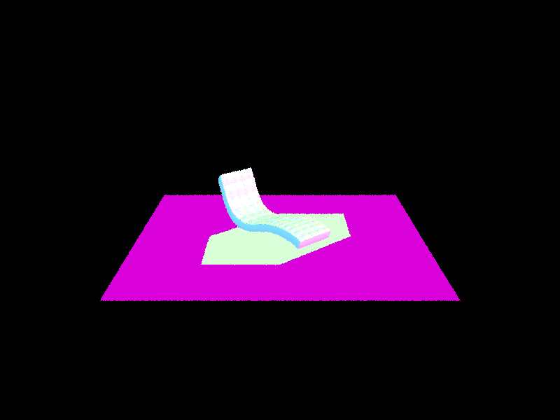 | 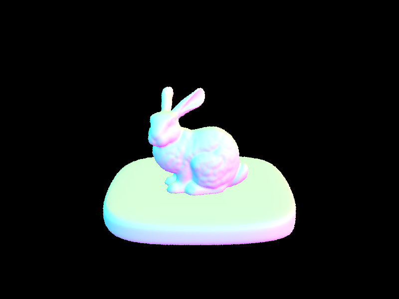 | 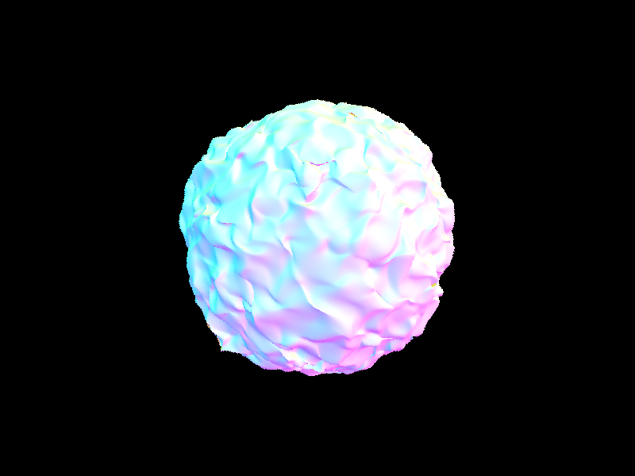 |
With Task 1 finished, we can render scenes with a few objects. However, the performance is not good enough for large scenes. This is largely due to the fact that the ray is solving the intersection equation with every single object in the scene. To improve the performance, we use an idea similar to "nearest neighbour search" using KD-tree in machine learning and implemented a BVH to accelerate the ray tracing process.
In a BVH (bounding volume hierarchy), every internal node stores a bounding box of all the objects inside it and references to its children. The leaf nodes store the actual objects. The BVH is constructed by recursively splitting the objects into two groups, and then recursively building the BVH for each group. The splitting is done by finding the longest axis of the bounding box of the objects, and then sorting the objects along that axis. The splitting point is chosen to be the median (or mean) of the sorted objects. The splitting is repeated until the number of objects in a group is less than a threshold.
Walk through your BVH construction algorithm. Explain the heuristic you chose for picking the splitting point.
We constructed the Bounding Volume Hierarchy in a recursive manner.
Show images with normal shading for a few large .dae files that you can only render with BVH acceleration.
| dragon | maxplanck | CBlucy |
|---|---|---|
| 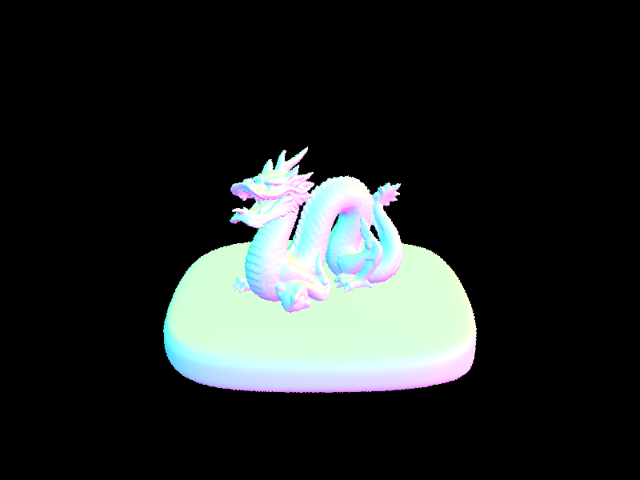 | 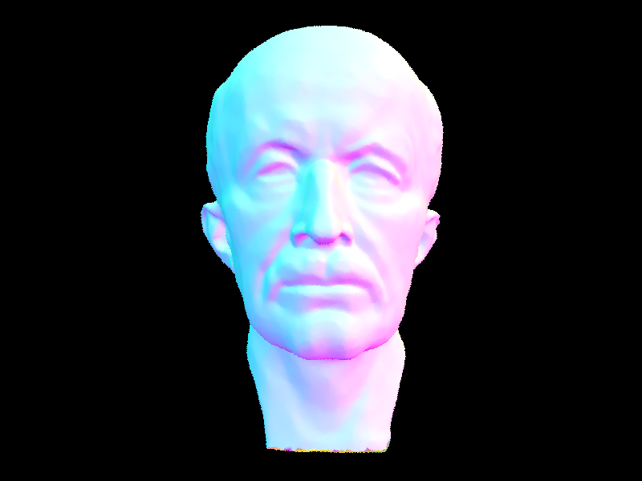 | 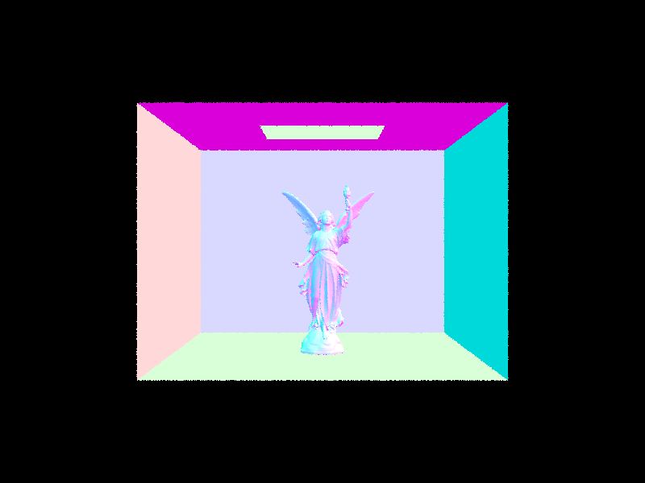 |
Compare rendering times on a few scenes with moderately complex geometries with and without BVH acceleration. Present your results in a one-paragraph analysis.
Before implementing the BVH acceleration, the rendering time for cow.dae took us around 4.7 seconds locally on our laptop; after implementing BVH acceleration, it took us 0.047 seconds to render locally.
Similarly for the dragon.dae, before it took us around 22 seconds to render, after it took us 0.05 seconds to render. The bounding box test helps us avoid a lot of unnecessary intersection computations, which turns out to be much more efficient.
In this task, we implemented direct illumination in the scene using random sampling and importance sampling. The estimation of the irradience received by the intersection point is done using Monte Carlo integration.
Walk through your implementation of the indirect lighting function.
For the direct lighting with uniform hemisphere sampling, we did the following:
w_in (we also set min_t to be EPS_F for numerical precision issues)w_in sampled, the reflectance at in the w_in direction, the cosine of the angle between w_in (in local coordinates) and the surface normal to, and then divide it by the probability which is uniform over the hemisphere (which is 1/2pi).For the direct lighting with important sampling light, we did something similar:
SceneLight::sample_L to sample a ray with hit point p, which we will get back the emitted radiance as well as the w_in we sampled, the distance to the light source, as well as the probability of that ray we sampledw_in sampled has a non-negative z coordinatew_in in world coordinate), and test whether it will intersect any primitives in the scene - if it did not intersect any primitives, then we know it reached the light source, where we will add it to the overall direct lighting through monte carlo estimator with exactly same formula in uniform hemisphere sampling just by changing the probability to the probability returned by sample_L; otherwise we disregard it since the ray will be blocked by some other primitives along that direction so no light will be casted to the hit point in that directionShow some images rendered with both implementations of the direct lighting function
Uniform Sampling:
Camera rays per pixel = 64, Number of samples per area light = 32
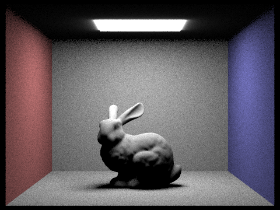
Importance Sampling:
Camera rays per pixel = 64, Number of samples per area light = 32, max depth = 6
| Bunny | Dragon |
|---|---|
| 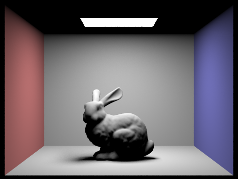 | 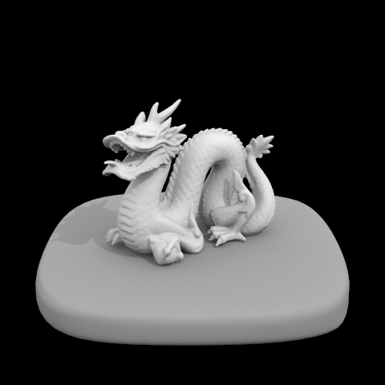 |
Focus on one particular scene with at least one area light and compare the noise levels in soft shadows when rendering with 1, 4, 16, and 64 light rays (the -l flag) and with 1 sample per pixel (the -s flag) using light sampling, not uniform hemisphere sampling.
Samples Per Area Light (L) |
Dragon |
|---|---|
| 1 | 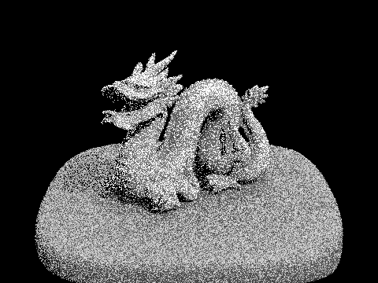 |
| 4 | |
| 16 | 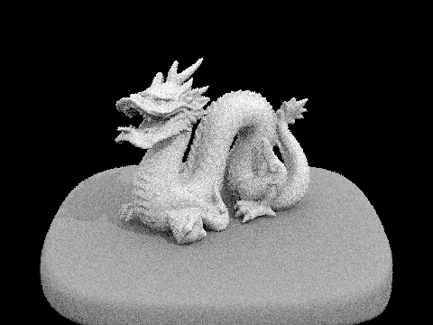 |
| 64 |
We focused on the dragon.dae. It is clear that with a small amount of samples per area light, there is a lot of noise in the soft shadows, which is visible from when samples per area light is 1 and 4.
But starting at L = 16, the soft shadow starts to appear to be different from the darker shadows that are actually completely blocked by the dragon.
At L = 64, the noise level has significantly decreased to the point that to the bare eye, it looks more realistic with the soft shadow completely different from the darker shadow underneath the dragon. So as we can tell, more samples per area light will make a better soft shadow.
Compare the results between uniform hemisphere sampling and lighting sampling in a one-paragraph analysis.
| Uniform | Importance |
|---|---|
As we call tell, with the important sampling light source technique, we get a much better rendered image than that of uniform sampling with the same amount of samples per light area and camera rays per pixel. Uniform hemisphere sampling seems to contain a larger amount of noise since we are taking samples in the entire upper hemisphere (which means we could get unlucky that most of the rays sampled will not land on a light source). However, for the important sampling light sources, we prioritize the probability to sample the rays pointing at light sources, which will likely contribute to the pixel value at that point. Therefore, using important sampling light source technique, we will have a less noisy image.
In this task, we implemented global illumination in the scene. Although direct illumination is a good approximation of the lighting in a scene, it is not sufficient to capture the full lighting effects.
Walk through your implementation of the indirect lighting function.
DiffuseBSDF::sample_f which samples a ray in the hemisphere according to the BRDF function defined by the material. The sample_f function is useful for the next step, and returns the reflectance of the material at the given direction, the probability distribution function (PDF) of the sampled direction, and the sampled direction in local coordinates.PathTracer::at_least_one_bounce_radience, which is a helper function that computes the radiance of a ray that has at least one bounce.
PathTracer::one_bounce_radience implemented in the previous task to get the one-bounce lighting L_out at the hit point.next_wo in the hemisphere according to the BRDF function defined by the material at the hit point using DiffuseBSDF::sample_f.PathTracer::at_least_one_bounce_radience to get the radiance of the ray I just sampled, let's call that L_out_next. And then I calculate the estimate of the irradiance at the hit point of all next-depth bounces using Monte Carlo Estimator by using the formula Irradience_Est = L_out_next * cosine_theta(next_wo) / pdf / (1 - prob_termination) where prob_termination is the probability of terminating the ray defined by Russian Roulette.
PathTracer::at_least_one_bounce_radience is a recursive function, it will keep calling itself until the ray is terminated or the max ray depth is reached. So this single step effectly returns the estimate of the irradiance at the hit point of all next-depth bounces.L_out + L_out_next as the estimate of the radiance of the ray at the hit point.PathTracer::est_radiance_global_illumination to apply the edits I made in the previous two steps into the render pipeline.Implementation Notice: I hard-coded prob_termination to 0.4.
Show some images rendered with global (direct and indirect) illumination. Use 1024 samples per pixel.
Parameters:
| Bunny | Dragon | Wall-E |
|---|---|---|
| 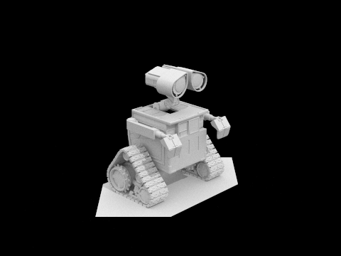 |
Pick one scene and compare rendered views first with only direct illumination, then only indirect illumination. Use 1024 samples per pixel. (You will have to edit PathTracer::at_least_one_bounce_radiance(...) in your code to generate these views.)
| Direct | Indirect (max_ray_depth = 5) |
|---|---|
| 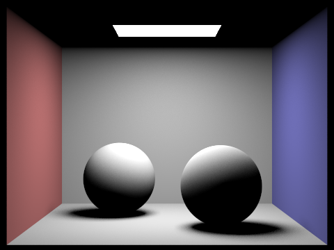 | 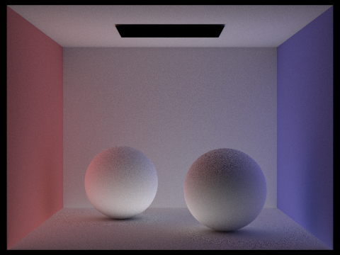 |
For CBbunny.dae, compare rendered views with max_ray_depth set to 0, 1, 2, 3, and 100 (the -m flag). Use 1024 samples per pixel.
-m |
CBbunny | -m |
CBbunny |
|---|---|---|---|
| 0 | 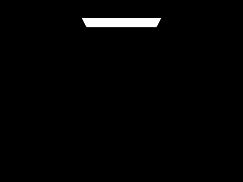 | 1 | |
| 2 | 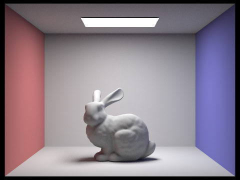 | 3 | |
| 100 | 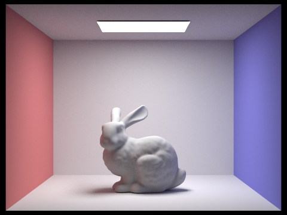 |
Pick one scene and compare rendered views with various sample-per-pixel rates, including at least 1, 2, 4, 8, 16, 64, and 1024. Use 4 light rays.
Parameters:
-s |
CBSpheres | -s |
CBSpheres |
|---|---|---|---|
| 1 | 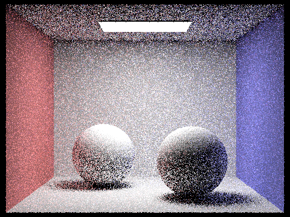 | 2 | |
| 4 | 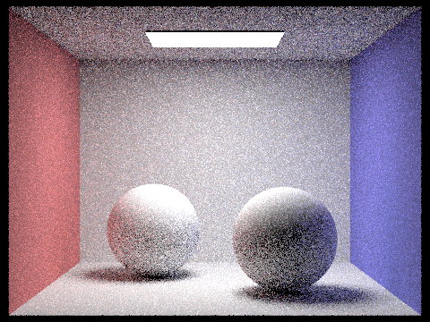 | 8 | |
| 16 | 64 | ||
| 1024 |
Global illumination works very well in the scene, but it is very slow if samples per pixel is high. In this task, we implemented adaptive sampling to speed up the rendering process.
Explain adaptive sampling. Walk through your implementation of the adaptive sampling.
Adaptive sampling is a technique that dynamically adjusts the number of samples per pixel based on the sample variance of the current pixel. The idea is that the "noise" in the rendered-image is caused by the complexity of ray-tracing the patch of pixels around the noisy pixel. To accurately estimate the noisy pixel we need to take more samples on that pixel. On the other hand, if the pixel is not noisy, we can take fewer samples on that pixel to save computation time. Therefore we use sample variance of the sampled rays for all pixels to estimate the noise level of the pixel. If the sample variance is high, we take more samples on that pixel. If the sample variance is low, we can terminate the sampling on that pixel early on.
To implement adaptive sampling, I modified the RayTracer::sample_pixel function. I added in two variables s1 and s2 before the render loop begins. s1 is the sum of the radiance of all samples, and s2 is the sum of the squared radiance of all samples. Then I modified the render loop to sample the pixel until the sample variance is low enough. For every sample we take, we update s1 and s2 accordingly.
The sample variance is only calculated every specific number of samples defined by the samplesPerBatch. Then we compute a 95% confidence interval for the sample variance using the formula and . We terminate the sampling on the pixel if .
Pick two scenes and render them with at least 2048 samples per pixel. Show a good sampling rate image with clearly visible differences in sampling rate over various regions and pixels. Include both your sample rate image, which shows your how your adaptive sampling changes depending on which part of the image you are rendering, and your noise-free rendered result. Use 1 sample per light and at least 5 for max ray depth.
Parameters:
| Image | Sample Rate |
|---|---|
| 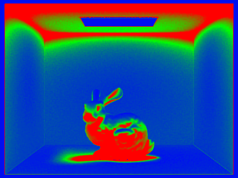 | |
| 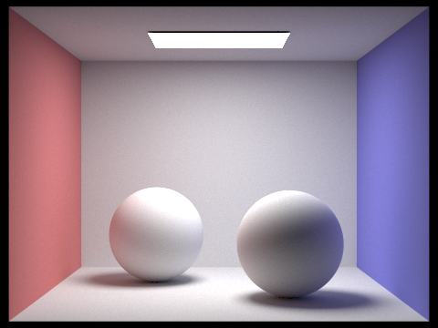 | 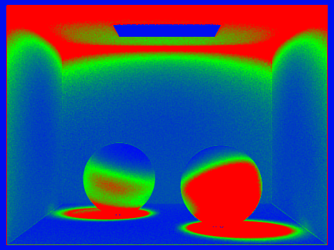 |
Webpage hosted at quantumcookie.xyz/Opensourced-Study-Notes-Berkeley/CS184/proj3-1-pathtracer-writeup/